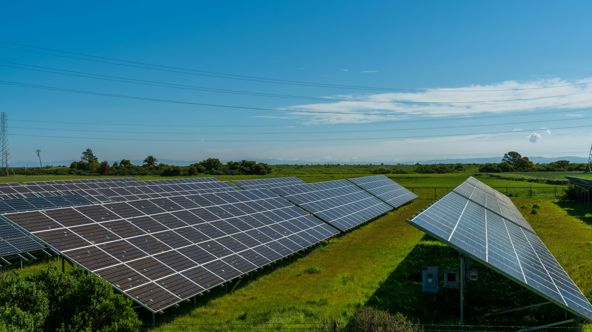

Energia Limpa e Renovável: O Futuro Da Energia.
Tipos de energia limpa
Energia Solar
O que é energia solar ?
A energia solar é uma fonte renovável e limpa, gerada a partir da luz e do calor do sol. Utilizando painéis fotovoltaicos, essa radiação é convertida diretamente em eletricidade, sendo uma alternativa sustentável e que reduz a emissão de gases poluentes e oferece economia na conta de luz.

Energia Eólica
A energia eólica é uma fonte renovável e limpa, gerada pela força dos ventos através de aerogeradores (turbinas). Ela transforma a energia cinética do ar em eletricidade, não emite gases de efeito estufa e é crucial para a transição energética. No Brasil, é uma fonte em forte expansão, com alto potencial, principalmente no Nordeste.
O que é energia hidrelétrica ?
Energia Hidrelétrica
A energia hidrelétrica é a eletricidade gerada pela força da água em rios, sendo uma fonte renovável e a principal matriz elétrica do Brasil (aprox. 64% da produção). Funciona represando água, que ao descer movimenta turbinas em uma usina, acionando geradores para criar energia limpa, porém com alto impacto ambiental local.

O que é biomassa ?
biomassa
A biomassa é matéria orgânica de origem animal ou vegetal (como cana-de-açúcar, lenha, resíduos agrícolas e esterco) utilizada como fonte de energia renovável, considerada uma alternativa limpa aos combustíveis fósseis. Ela pode ser convertida em energia térmica e elétrica, ou dar origem a biocombustíveis como o biogás
O que é hidrogênio verde ?
Hidrogênio Verde
O hidrogênio verde (H2V) é um combustível 100% renovável e livre de carbono, produzido pela eletrólise da água usando energia solar ou eólica. Ele separa o hidrogênio do oxigênio sem emitir poluentes, servindo como alternativa limpa para indústrias e transportes. O Brasil se destaca no setor devido à sua matriz energética renovável.

O que é geotérmica ?
Geotérmica
A energia geotérmica é uma fonte renovável e limpa obtida através do aproveitamento do calor proveniente do interior da Terra. Esse calor, gerado principalmente pelo núcleo terrestre e pela desintegração de elementos radioativos, aquece rochas e água subterrâneas, que podem ser acessadas por meio de perfurações.